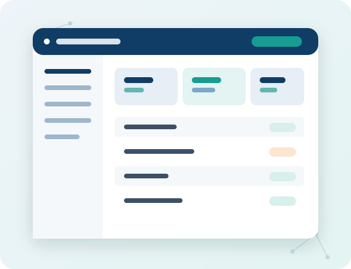

EDC & IRT platform for clinical research
Reliable clinical data capture for sponsors, CROs and research teams
MainEDC is a validated electronic data capture and randomization platform used to build, run and monitor clinical studies — from first-patient-in to a clean, export-ready database.
Used on studies for 182 organizations in Russia · Phase I–IV trials · GCP / GAMP 5 / 21 CFR Part 11

Why teams switch to MainEDC
Less time reconciling data. More time running the study.
Cut monitoring costs
CROs running risk-based monitoring on MainEDC have reported on-site monitoring costs cut by up to 75% by focusing visits on the data that actually needs review.
Automate medical coding
MainEDC AI Coder automates up to 80% of medical coding work against MedDRA, WHODrug, LOINC and ATC dictionaries, with full human review built into the workflow.
Go from paper to platform faster
Document Management Services digitize and structure paper-based archives, so historical study data becomes searchable and ready for analysis.
Platform
One platform, the modules a study actually needs
MainEDC is modular — start with core EDC and add randomization, patient-reported outcomes, AI coding or document storage as the study requires.
MainEDC — core EDC
Configurable eCRFs, edit-checks, query management and role-based access for study teams of any size.
See the platform →IWRS / randomization
Block and stratified randomization with drug-supply management, integrated with the same study database.
Learn more →eConsent, ePRO, eCOA
Electronic consent and patient/clinician-reported outcomes in one connected workflow.
AI Coder
AI-assisted medical coding with human-in-the-loop review.
Storage
Long-term, validated storage for study documentation and source records.
RBM — risk-based monitoring
Targets monitoring effort at the sites and data points with the highest risk, instead of 100% SDV.
Register
Built for patient registries and real-world evidence (RWE) data collection across heterogeneous sources.
Solutions
Built around how your organization actually works
CROs
Run multiple sponsor studies on one platform and shift monitoring budget from travel to data review.
For CROs →Sponsors
Keep oversight of study data quality and timelines without building in-house EDC infrastructure.
For sponsors →Research teams & sites
A data-entry experience designed for investigators and coordinators, not just data managers.
For research teams →RWE & registries
Collect and structure real-world and registry data from disparate sources into one consistent record.
For RWE & registries →Services
Hands-on support, not just software
Implementation
eCRF design and study configuration, typically 3 weeks to 8 months depending on scope.
Training
Onboarding for data managers, monitors, investigators and site staff.
Validation
GAMP 5-aligned validation documentation for inspection readiness.
Quality assurance
Ongoing QA support across the study data lifecycle.
How a study runs on MainEDC
From study build to export-ready dataset
-
01
Study setup
Build eCRFs, edit-checks and user roles with the MainEDC WEB Builder.
-
02
Site & user management
Onboard sites and assign role-based access and permissions.
-
03
Data entry
Online or offline entry at the site, including mobile data capture.
-
04
Monitoring & queries
Risk-based monitoring, SDV and query management to keep data clean.
-
05
Export & reporting
Coded, SDTM-ready exports and reporting for analysis and submission.
Results
What customers achieve with MainEDC
[Insert verified customer quote or case study result — do not publish unconfirmed quotes]
[Insert verified client logo]
[Insert verified customer quote or case study result — do not publish unconfirmed quotes]
[Insert verified client logo]
[Insert verified customer quote or case study result — do not publish unconfirmed quotes]
[Insert verified client logo]